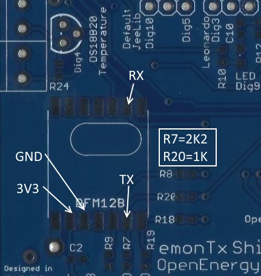

Hi,
anyone have this combination with uno + emontx + esp8266?
I would like to send data to local emoncms. Please help.
["shield" added to title - Moderator (RW)]
Archived Forum |
|
uno + emontx shield + esp8266Submitted by snoopy on Wed, 11/11/2015 - 19:12Hi, anyone have this combination with uno + emontx + esp8266? I would like to send data to local emoncms. Please help. ["shield" added to title - Moderator (RW)] » |
Re: uno + emontx shield + esp8266
What, no one has this? This would be the best and cheapest option. You don't need to have emonbase,...
Re: uno + emontx shield + esp8266
i have this part emontx + esp8266
see here http://openenergymonitor.org/emon/node/11678
you d just have to change the host from emoncms.org to whatever your local emoncms ip/hostname is as far as i can tell
Re: uno + emontx shield + esp8266
Ok, so we need your emonTXSerialGateway which is burned to ESP8266.
ESP8266 is then connected to this pins on emontx shield.

Now it is just the matter of getting sketch for the uno. I was thinking something like this (i have added SoftwareSerial Esp(2, 13); // RX,TX and Esp.print to original sketch). Would this be ok?
/* EmonTx Shield 4 x CT example An example sketch for the emontx Arduino shield module for CT only electricity monitoring. Part of the openenergymonitor.org project Licence: GNU GPL V3 Authors: Glyn Hudson, Trystan Lea Builds upon JeeLabs RF12 library and Arduino emonTx documentation: http://openenergymonitor.org/emon/modules/emontxshield/ emonTx firmware code explination: http://openenergymonitor.org/emon/modules/emontx/firmware emonTx calibration instructions: http://openenergymonitor.org/emon/modules/emontx/firmware/calibration
THIS SKETCH REQUIRES:
Libraries in the standard arduino libraries folder:
- JeeLib https://github.com/jcw/jeelib
- EmonLib https://github.com/openenergymonitor/EmonLib.git
Other files in project directory (should appear in the arduino tabs above)
- emontx_lib.ino
*/
/*Recommended node ID allocation
------------------------------------------------------------------------------------------------------------
-ID- -Node Type-
0 - Special allocation in JeeLib RFM12 driver - reserved for OOK use
1-4 - Control nodes
5-10 - Energy monitoring nodes
11-14 --Un-assigned --
15-16 - Base Station & logging nodes
17-30 - Environmental sensing nodes (temperature humidity etc.)
31 - Special allocation in JeeLib RFM12 driver - Node31 can communicate with nodes on any network group
-------------------------------------------------------------------------------------------------------------
*/
#define FILTERSETTLETIME 5000 // Time (ms) to allow the filters to settle before sending data
const int CT1 = 1;
const int CT2 = 1; // Set to 0 to disable
const int CT3 = 1;
const int CT4 = 1;
#define RF_freq RF12_433MHZ // Frequency of RF12B module can be RF12_433MHZ, RF12_868MHZ or RF12_915MHZ. You should use the one matching the module you have.
const int nodeID = 6; // emonTx RFM12B node ID
const int networkGroup = 210; // emonTx RFM12B wireless network group - needs to be same as emonBase and emonGLCD
#define RF69_COMPAT 0 // set to 1 to use RFM69CW
#include <JeeLib.h> // make sure V12 (latest) is used if using RFM69CW
#include "EmonLib.h"
#include <SoftwareSerial.h>
#include <stdio.h>
EnergyMonitor ct1,ct2,ct3, ct4; // Create instances for each CT channel
typedef struct { int power1, power2, power3, power4, nothing;} PayloadTX; // create structure - a neat way of packaging data for RF comms, nothing is added a a 5th integer to match data structure of voltage version
PayloadTX emontx;
const int LEDpin = 9; // On-board emonTx LED
boolean settled = false;
// Software serial port (leave Serial0 for debuging)
SoftwareSerial Esp(2, 13); // RX,TX
void setup()
{
Esp.begin(9600); // Start soft/Esp uart
Serial.begin(9600);
Serial.println("emonTX Shield CT123 example");
Serial.println("OpenEnergyMonitor.org");
Serial.print("Node: ");
Serial.print(nodeID);
Serial.print(" Freq: ");
if (RF_freq == RF12_433MHZ) Serial.print("433Mhz");
if (RF_freq == RF12_868MHZ) Serial.print("868Mhz");
if (RF_freq == RF12_915MHZ) Serial.print("915Mhz");
Serial.print(" Network: ");
Serial.println(networkGroup);
if (CT1) ct1.current(1, 60.606); // Setup emonTX CT channel (channel, calibration)
if (CT2) ct2.current(2, 60.606); // Calibration factor = CT ratio / burden resistance
if (CT3) ct3.current(3, 60.606);
if (CT4) ct4.current(4, 60.606);
// emonTx Shield Calibration = (100A / 0.05A) / 33 Ohms
rf12_initialize(nodeID, RF_freq, networkGroup); // initialize RFM12B
rf12_sleep(RF12_SLEEP);
pinMode(LEDpin, OUTPUT); // Setup indicator LED
digitalWrite(LEDpin, HIGH);
}
void loop()
{
if (CT1) {
emontx.power1 = ct1.calcIrms(1480) * 240.0; //ct.calcIrms(number of wavelengths sample)*AC RMS voltage
Serial.print(emontx.power1);
Esp.print(emontx.power1);
}
if (CT2) {
emontx.power2 = ct2.calcIrms(1480) * 240.0;
Serial.print(" "); Serial.print(emontx.power2);
Esp.print(" "); Esp.print(emontx.power2);
}
if (CT3) {
emontx.power3 = ct3.calcIrms(1480) * 240.0;
Serial.print(" "); Serial.print(emontx.power3);
Esp.print(" "); Esp.print(emontx.power3);
}
if (CT4) {
emontx.power4 = ct4.calcIrms(1480) * 240.0;
Serial.print(" "); Serial.print(emontx.power4);
Esp.print(" "); Esp.print(emontx.power4);
}
Serial.println(); delay(100);
Esp.println(); delay(100);
// because millis() returns to zero after 50 days !
if (!settled && millis() > FILTERSETTLETIME) settled = true;
if (settled) // send data only after filters have settled
{
send_rf_data(); // *SEND RF DATA* - see emontx_lib
digitalWrite(LEDpin, HIGH); delay(2); digitalWrite(LEDpin, LOW); // flash LED
delay(2000); // delay between readings in ms
}
}
Re: uno + emontx shield + esp8266
hi, yes it should work with any sketch, but instead of send_rf_data you need to output the data to serial in the specified format, like:
NODEID POWER1 POWER2 POWER3 POWER4 VRMS TEMP1 ETC ...
Re: uno + emontx shield + esp8266
hi, sorry, just looked better at the sketch and you seem to be printing everything except the node id on every line
i do not know what capabilities the uno shield has, but it needs to output about 250ma to power the esp from it, you might want to power it separatelly
i also do not know if it's ok to link it instead of the RFM module like you seem to want to do.
i have connected it directly on the uno's serial/programming port. the one that is usually linked to the programmer
Re: uno + emontx shield + esp8266
Will add node id to the line.
Yes i know about power requirements for the esp and some say it works with the 3,3v from uno and some are using external psu. I will first try the uno supply if it will be good enough.
I think it should work from the shield pins. I define which pins are for RX and TX with this "SoftwareSerial Esp(2, 13)"
Have to test all this. Tnx.
Re: uno + emontx shield + esp8266
I can confirm that this setup works perfect. I'm sending data directly to emoncms.org from emontx shield + esp8266.
Re: uno + emontx shield + esp8266
Nice to know, thanks
Re: uno + emontx shield + esp8266
Really the future is ESP32 (in beta testing now)
8 Channels ADC, 13 bit resolution, 0.4-4V range, bluetooth + wifi
http://www.cnx-software.com/2015/11/05/espressif-esp32-dual-core-soc-features-faster-wifi-bluetooth-4-0-le-and-more-peripherals/
Re: uno + emontx shield + esp8266
I agree but i don't see any improvements for this project because 8266 gets the job done.
Re: uno + emontx shield + esp8266
once the esp32 is out, and once you can compile stuff for it in arduino ide, i am sure a solution will come up to replace all of the emontx + gateway with something like esp32 + current and voltage sensors.
but i think that s a number of months off (hence you calling it the future :), and we already have this hardware available now. my emontx has been sitting unused for more than a year, so happy to be playing with it now